服務註冊nacos、feign、Gateway
SpringBoot微服務項目筆記-02
SpringCloud自由配
結合SpringCloud Alibaba最終的技術搭配方案
- SpringCloud Alibaba - Nacos: 註冊中心 (服務發現/註冊)
- SpringCloud Alibaba- Nacos: 配置中心 (動態配置管理)
- SpringCloud Ribbon: 負載均衡
- SpringCloud Feign: 聲明式HTTP客户端(調用遠程服務)
- SpringCloud Alibaba - Sentinel: 服務容錯(限流、降級、熔斷)
- SpringCloud Gateway: API 網關 (webflux 編程模式)
- SpringCloud Sleuth: 調用鏈監控
- SpringCloud Alibaba - Seata: 原Fescar, 即分佈式事務解決方案
版本需求關係
SpringCloud 版本配不上，開都開不起來
https://github.com/alibaba/spring-cloud-alibaba/wiki/%E7%89%88%E6%9C%AC%E8%AF%B4%E6%98%8E
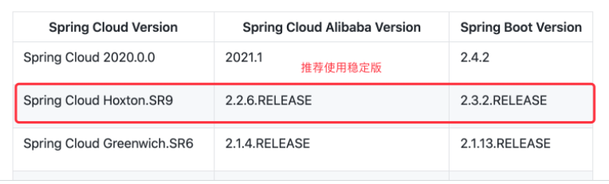
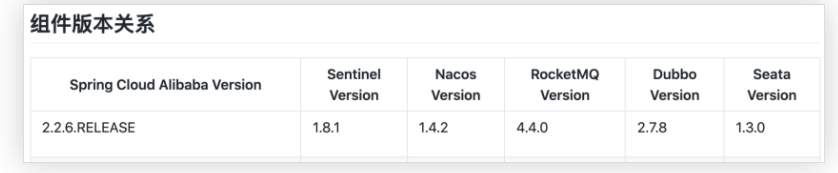
Nacos註冊
- 導依賴
<dependency>
<groupId>com.alibaba.cloud</groupId>
<artifactId>spring-cloud-starter-alibaba-nacos-discovery</artifactId>
<version>2.2.6.RELEASE</version>
</dependency>
- docker啟動nacos
--env配置環境MODE=standalong單節點--name nacos映象名稱為nacos-d背景啟動
# 拉映像
docker pull nacos/nacos-server
# 啟動容器
docker run --env MODE=standalone --name nacos -d -p 8848:8848 -e JVM_XMS=256m -e JVM_XMX=256m -e JVM_XMN=256m -e JVM_MMS=256m nacos/nacos-server
- 這東西不限制會吃超多記憶體
- 預設網址為
localhost:8848/nacos，帳號密碼都是nacos
註冊服務
在應用的 /resource /application.properties 中配置 Nacos Server地址
spring.cloud.nacos.discovery.server-addr=127.0.0.1:8848
- 使用
@EnableDiscoveryClient開啓服務註冊發現功能
@SpringBootApplication
@EnableDiscoveryClient
public class ProviderApplication {
public static void main(String[] args) {
SpringApplication.run(ProviderApplication.class, args);
}
}
- 啓動服務、觀察 nacos 服務列表是否已經註冊上服務，注意每一個服務都該有名字，可以在
applicaion.propertes設定
spring.application.name= service provider
server.port=8000
- 註冊更多的服務上去，測試使用 feign
feign遠程調用
- 導依賴
<dependency>
<groupId>org.springframework.cloud</groupId>
<artifactId>spring-cloud-starter-openfeign</artifactId>
<version>2.2.6.RELEASE</version>
</dependency>
- 自己造一個feign包(類似於中介看板)，可以放在common模組
- 在feign包中建立接口，舉例:這邊想讓人遠程調用coupon的方法，就叫
CouponFeignService，使用@FeignClient("服務名")註解，並且在接口中貼上要被遠程調用的方法與"完整的"請求路徑，
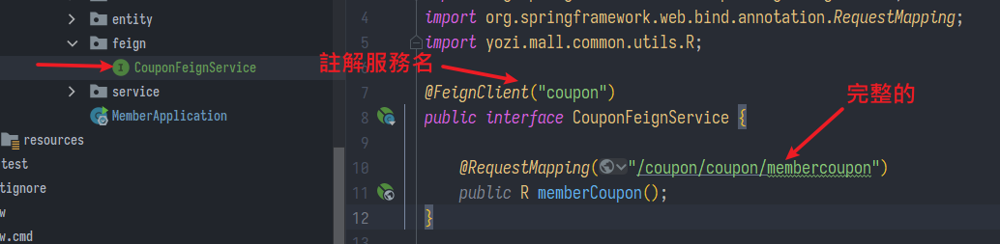
- 要執行遠程調用的執行類，則在上面註解
@EnableFeignClientsbasePackages是剛剛建立接口所在的包名- 表示"我要遠程調用這些本不屬於我方法"
@EnableFeignClients(basePackages = "yozi.mall.member.feign")
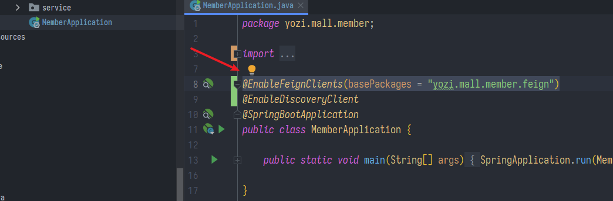
- 最後製造接口的實例就能調用了，例如在其下的某Controller:
@Autowired
CouponFeignService couponFeignService;
// Member模組中調用copon模組，查看該會員名下的所有優惠券
@RequestMapping("/coupons")
public R test(){
MemberEntity memberEntity = new MemberEntity();
memberEntity.setNickname("李四");
R r = couponFeignService.memberCoupon();
return R.ok().put("member",memberEntity).put("coupons",r.get("coupons"));
}
小結
- 要被調用的方法，寫全URL放到接口中；
- 要發起call的人用
@EnableFeignClients(basePackages=掃描接口並創造實例
Nacos配置中心
- 先引依賴
<dependency>
<groupId>com.alibaba.cloud</groupId>
<artifactId>spring-cloud-starter-alibaba-nacos-config</artifactId>
</dependency>
- 在
bootstrap.properties中配置 Nacos server 的地址和應用名
spring.cloud.nacos.config.server-addr=127.0.0.1:8848
spring.application.name=example
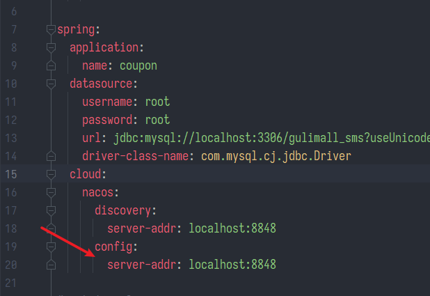
釐清配置檔
學到這不禁疑惑，查了一下
.yml 與 .properties
.properties編碼要手動設定成UTF-8，且無序(底層是Hashtable).yml例如一個URI匹配規則同時滿足兩個路由，預設會使用後面那個- 如果同時存在，覆蓋優先級為位置最大
config/application-default.properties
> config/application-default.yml
> application-default.properties
> application-default.yml
> config/application.properties
> config/application.yml
> application.properties
> application.yml
- 實務上通常沒人會這樣搞，可以認為兩者一樣，yal簡潔好讀，prop複製單行快
- 有個插件ConvertYamlAndProperties按右鍵就能轉換，適合強迫症患者
bootstrap與application
-
bootstrap先載入，application後載入
-
有一段乍看難懂的解釋這樣說:
bootstrap.yml 用於應用程式上下文的引導階段
bootstrap.yml 由父Spring ApplicationContext載入
父ApplicationContext 被載入到使用 application.yml 的之前
- bootstrap可以理解成系統級別的一些引數配置，這些引數一般是不會變動的
- application可以用來定義應用級別的，如果搭配 spring-cloud-config 使用application裡面定義的檔案可以實現動態替換
測試配置
線上更新配置，功能類似spring-cloud-config但更簡單
- 例如我在MemberController中測試一個方法，獲取user.name，同時在
application.properties註冊值是Tom
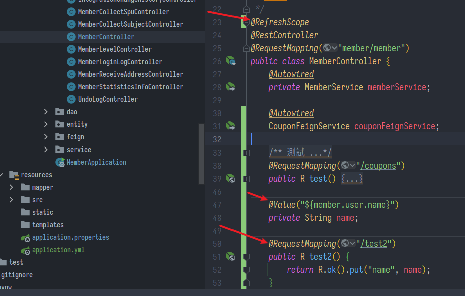
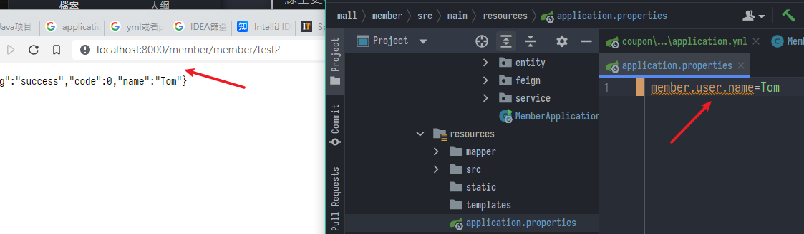
-
訪問結果與想像的一樣
-
現在來到nacos控制頁面
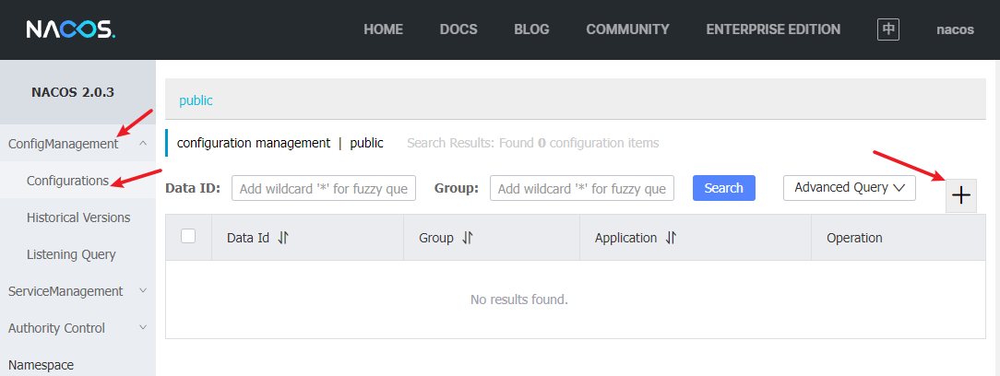
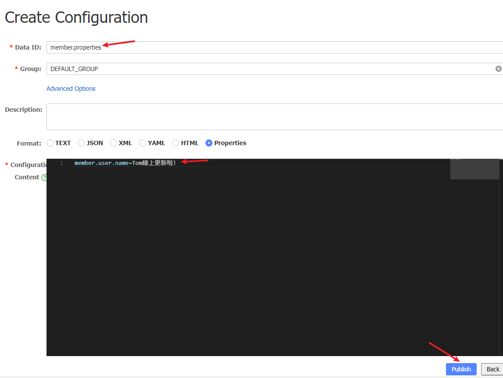
- 結果更新成功，就不演示了。配置中心的設定優先級高
- 重點在於用
@RefreshScope註解controller，並且Data ID要正確，預設值就是服務名，Data ID可以在Spring Boot啟動資訊處看到
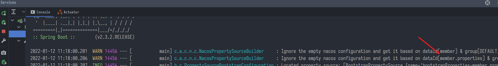
- 自己測試了一下優先級，如果2者同時存在，TomBootstrap先載入，然後結果被TomApplication覆蓋
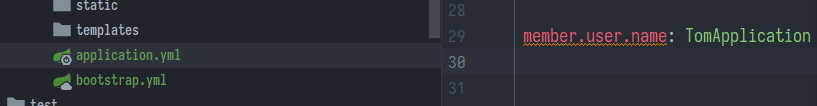
- 再加上Configuration的話，最後贏家是TomConfiguration
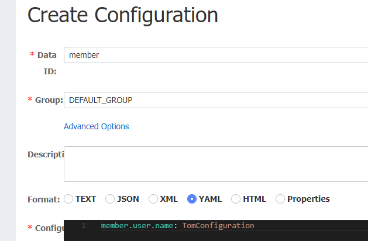
配置分組
namespace
- 命名空間預設值是
public，通常用來隔離區分開發、測試、生產環境- 必須在bootstrap.yml中指定
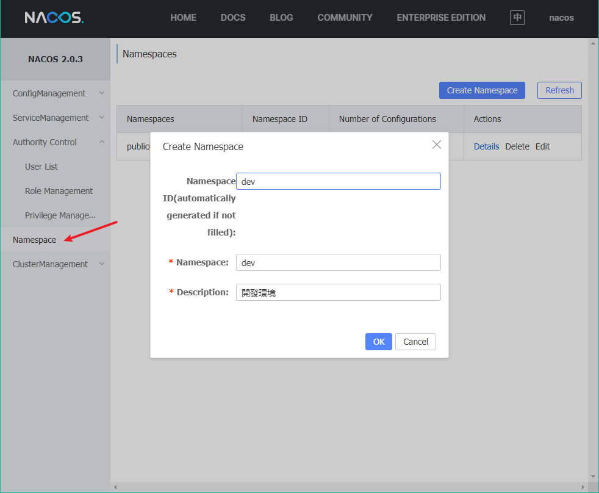
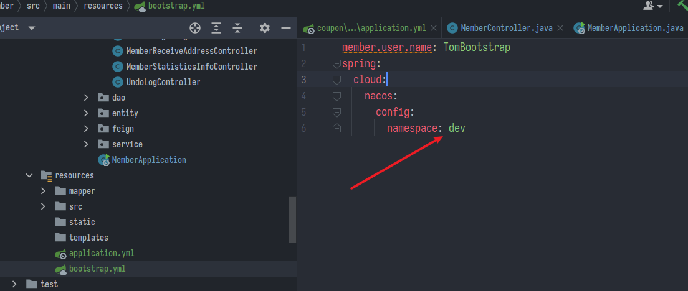
group
- 預設值是
DEFAULT_GROUP，同樣必須在bootstrap.yml中指定 - 也可以分組，例如區分微服務模組，具體分法還是看公司規定怎用
拆分配置
- 例如在Bootstrap中設定載入多份配置檔
- 當本地存在檔案，就預設讀取本地
- 設定
refresh=true，如果線上有就優先用nacos配置，達成一個線上部屬、統一管理的效果
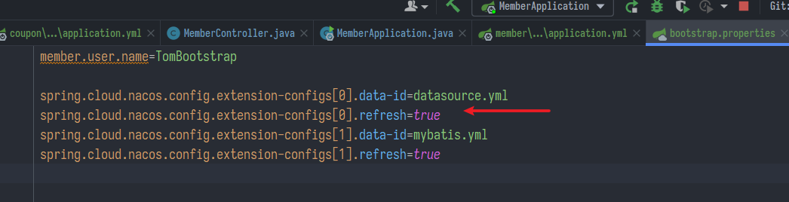
Spring Cloud Gateway
Gateway 台:閘道器、陸:網關
- 用來管理請求API，例如誰要去哪、轉發、安全策略、防刷、流量、監控日誌等等
- 核心觀念
- 路由: 基礎單位，有一個ID、目的URL、一組斷言和一組Filter組成
- 斷言: 匹配http request中的資訊比如請求頭和引數，
- 過濾器: 就是老朋友Filter，用來修飾請求和響應
- 官方經典說明圖
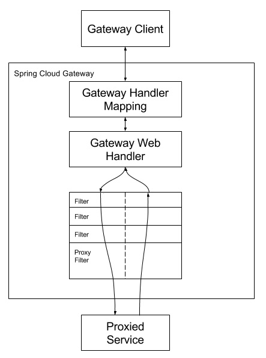
使用
- 首先引依賴，注意這邊不能引common，因為那邊有
spring-boot-starter-web那些會跟gateway衝突- 可以在執行類用
@SpringBootApplication(exclude = {DataSourceAutoConfiguration.class})的方式排除掉 - 但我這邊其實是模組分類不太正確，建大一點再看看怎改吧
- 可以在執行類用
<dependencies>
<dependency>
<groupId>com.alibaba.cloud</groupId>
<artifactId>spring-cloud-starter-alibaba-nacos-discovery</artifactId>
</dependency>
<dependency>
<groupId>com.alibaba.cloud</groupId>
<artifactId>spring-cloud-starter-alibaba-nacos-config</artifactId>
</dependency>
<dependency>
<groupId>org.springframework.cloud</groupId>
<artifactId>spring-cloud-starter-gateway</artifactId>
<version>2.2.6.RELEASE</version>
</dependency>
</dependencies>
- bootstrap.properties
- 改port成80，8080留給nginx反向代理用
- bootstrap放不太會改動的，如服務名等等
spring.application.name=gateway
server.port=80
spring.cloud.nacos.discovery.server-addr=localhost:8848
spring.cloud.nacos.config.server-addr=localhost:8848
- application.yml裡面就可以設定轉發規則、log等等
- yaml中
-表示數組，每個route有自己的ID - uri表示要轉去的地方
- predicates是斷言的規則，符合條件的就抓去
- 這裡可以用正則式
- 可以參考 https://openhome.cc/Gossip/Spring/Gateway.html
- yaml中
spring:
cloud:
gateway:
routes:
- id: test_route
uri: https://google.com
predicates:
- Query=url,goo
- 啟動服務，預設會跑在 Netty 上，輸入http://localhost:80/abc?url=goo看被轉走了
- 這部分基礎先只講了一點，馬上要先做一個後台管理的前端部分，緊跟的應用上發現需求才會再回來講網關
上次修改於 2022-01-19